11 Respostas dos exercícios
11.1 Capítulo 3
- Exercício 1
vetor1 <- c(10, 9, 8, 7, 6, 5, 4, 3, 2, 1)
vetor2 <- c(1, 2, 3, 4, 5, 6, 7, 8, 9, 10)
soma <- vetor1 + vetor2
subtracao <- vetor1 - vetor2
multiplicacao <- vetor1 * vetor2- Exercício 2
matriz1 <- matrix(1:4, nrow = 2, ncol = 2)
matriz2 <- matrix(5:8, nrow = 2, ncol = 2)
soma <- matriz1 + matriz2
subtracao <- matriz1 - matriz2
multiplicacao <- matriz1 %*% matriz2- Exercício 3
alunos <- data.frame(
Nome = c("Letícia", "Mariana", "Ana", "Otávio", "Ricardo"),
Idade = c(17, 18, 16, 17, 19),
Nota = c(8.5, 6.2, 4.3, 2.0, 5.5)
)
alunos$Aprovado <- alunos$Nota >= 6
print(alunos)## Nome Idade Nota Aprovado
## 1 Letícia 17 8.5 TRUE
## 2 Mariana 18 6.2 TRUE
## 3 Ana 16 4.3 FALSE
## 4 Otávio 17 2.0 FALSE
## 5 Ricardo 19 5.5 FALSE- Exercício 4
exponencial <- function(M, b=exp(1)) {
lc <- dim(M) # vetor com número de linhas e colunas de M
E <- M # inicializa a matriz E que será retornada pela função
i <- 1 # Inicializa i que irá percorrer as linhas
while(i<=lc[1]){
j <- 1 # inicializa j que irá percorrer as colunas
while(j<=lc[2]){
E[i,j] <- b^M[i,j] # calcula os elementos da matriz E
j <- j + 1 # atualiza j
}
i <- i + 1 # atualiza i
}
return(E)
}
# Testa a função 'exponencial'
M## [,1] [,2] [,3]
## [1,] 1 2 3
## [2,] 0 1 4
## [3,] 0 0 1## [,1] [,2] [,3]
## [1,] 2 4 8
## [2,] 1 2 16
## [3,] 1 1 2## [,1] [,2] [,3]
## [1,] 2.718282 7.389056 20.085537
## [2,] 1.000000 2.718282 54.598150
## [3,] 1.000000 1.000000 2.718282- Exercício 5
calcula_area <- function(base, altura) {
return((base * altura) / 2)
}
# Testa a função 'calcula_area'
calcula_area(15, 3)## [1] 22.5- Exercício 6
conta_pos_neg <- function(vetor) {
pos <- sum(vetor > 0)
neg <- sum(vetor < 0)
return(list(positivos = pos, negativos = neg))
}
# Testa a função 'conta_pos_neg'
vetor <- c(-10, 7, 4, -8, -15, 3, -5, 7, 0, 1, -2)
resultado <- conta_pos_neg(vetor)
print(resultado)## $positivos
## [1] 5
##
## $negativos
## [1] 511.2 Capítulo 4
- Exercício 1
library(tidyverse) # Carregue o pacote
mtcars %>%
filter(cyl == 6) %>% # Item a
select(mpg, hp, wt) %>% # Item b
arrange(desc(mpg)) # Item c## mpg hp wt
## Hornet 4 Drive 21.4 110 3.215
## Mazda RX4 21.0 110 2.620
## Mazda RX4 Wag 21.0 110 2.875
## Ferrari Dino 19.7 175 2.770
## Merc 280 19.2 123 3.440
## Valiant 18.1 105 3.460
## Merc 280C 17.8 123 3.440- Exercício 2
library(stringr)
nomes <- c("Mariana Silva", "Mateus Souza", "Letícia Dias", "Guilherme Almeida",
"Yasmin Santos")
# Separando o nome e sobrenome
nomes_sobrenomes <- str_split(nomes, " ")
print(nomes_sobrenomes)## [[1]]
## [1] "Mariana" "Silva"
##
## [[2]]
## [1] "Mateus" "Souza"
##
## [[3]]
## [1] "Letícia" "Dias"
##
## [[4]]
## [1] "Guilherme" "Almeida"
##
## [[5]]
## [1] "Yasmin" "Santos"- Exercício 3:
library(forcats)
# Criando o fator
cores <- factor(c("rosa", "vermelho", "azul", "amarelo", "rosa", "verde", "azul", "rosa"))
# (a) Reordenar os níveis para que a cor mais frequente venha primeiro
cores_reordenadas <- fct_infreq(cores)
levels(cores_reordenadas)## [1] "rosa" "azul" "amarelo" "verde" "vermelho"# (b) Agrupar todas as cores menos frequentes que "azul" em "Outro"
cores_agrupadas <- fct_lump(cores, n = 2, other_level = "Outro")
table(cores_agrupadas)## cores_agrupadas
## azul rosa Outro
## 2 3 311.3 Capítulo 5
- Exercício 1:
Dada uma amostra de tamanho \(n\), \(x_1,\ldots,x_n\), queremos mostrar que
\[ \sum_{i=1}^n (x_i - \bar{x}) = 0 \]
Onde \(\bar{x}\) é a média amostral, dada por
\[ \bar{x} = \frac{1}{n}\sum_{i=1}^n x_i \]
Primeiro, vamos expandir a soma
\[ \sum_{i=1}^n (x_i - \bar{x}) = \sum_{i=1}^n x_i - \sum_{i=1}^n \bar{x} \]
Como \(\bar{x}\) é uma constante, ou seja, não depende de \(i\), podemos reescrever:
\[ \sum_{i=1}^n \bar{x} = n \bar{x} \]
Mas pela definição de média amostral:
\[ \bar{x} = \frac{1}{n}\sum_{i=1}^n x_i \Rightarrow n \bar{x} = \frac{1}{n}\sum_{i=1}^n nx_i= \sum_{i=1}^n x_i \]
Logo,
\[ \sum_{i=1}^n x_i - \sum_{i=1}^n x_i = 0 \text{ } \blacksquare \]
Exercício 2
Média:
\[ \bar{x} = \frac{1}{n}\sum_{i=1}^n x_i \]
\[ \bar{x} = \frac{(1 \times 3) + (2 \times 11) + (3 \times 16) + (4 \times 9) + (5 \times 6) + (6 \times 1) + (7 \times 2) + (8 \times 1) + (15 \times 1)}{50} \\ \]
\[ \bar{x} = \frac{182}{50} = 3,64 \]
Moda: 3
Mediana:
\[ \frac{x_{25} + x_{26}}{2} =\frac{3 + 3}{2} = 3 \] - Quartis \(q(0,25) = x_{13} = 2\) e \(q(0,75) = x_{38} = 4\)
11.4 Capítulo 6
- Exercício 1:
Item (a)
- Fisioterapia: variável qualitativa discreta.
- Sequelas: variável qualitativa nominal.
- Cirurgia: variável qualitativa ordinal.
Item (b)
- Para Fisioterapia (em meses):
freq_fisio <- tab_fisio %>%
count(`Fisioterapia (em meses)`) %>%
mutate(
FreqRel = round(n / sum(n), 2)
) %>%
rename(Frequencia = n)
print(freq_fisio)## # A tibble: 5 × 3
## `Fisioterapia (em meses)` Frequencia FreqRel
## <dbl> <int> <dbl>
## 1 4 2 0.13
## 2 5 5 0.33
## 3 6 3 0.2
## 4 7 3 0.2
## 5 8 2 0.13ggplot(tab_fisio, aes(x = factor(`Fisioterapia (em meses)`))) +
geom_bar(fill = "deeppink", color = "black") +
labs(x = "Meses de Fisioterapia", y = "Frequência") +
theme_minimal()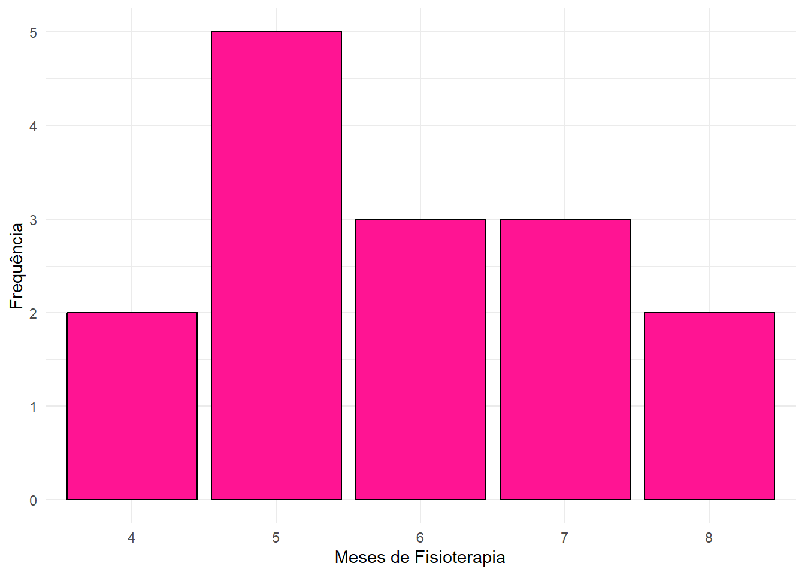
- Para Sequêlas:
freq_sequelas <- tab_fisio %>%
count(Sequelas) %>%
mutate(
FreqRel = round(n / sum(n), 2)
) %>%
rename(Frequencia = n)
print(freq_sequelas)## # A tibble: 2 × 3
## Sequelas Frequencia FreqRel
## <chr> <int> <dbl>
## 1 N 8 0.53
## 2 S 7 0.47ggplot(tab_fisio, aes(x = Sequelas)) +
geom_bar(fill = "deeppink", color = "black") +
labs(x = "Expectativa de Sequelas", y = "Frequência") +
theme_minimal()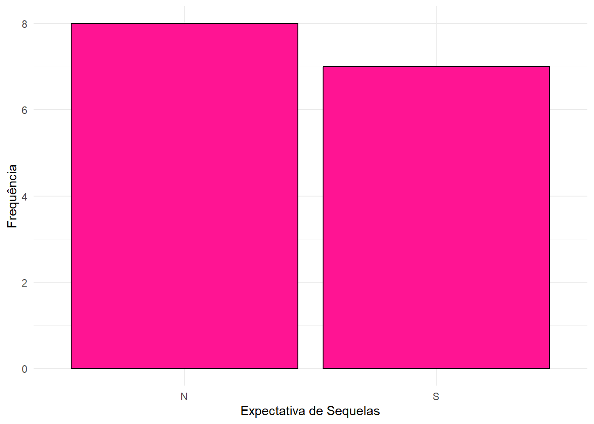
- Para Cirurgia:
freq_cirurgia <- tab_fisio %>%
count(Cirurgia) %>%
mutate(
FreqRel = round(n / sum(n), 2)
) %>%
rename(Frequencia = n)
print(freq_cirurgia)## # A tibble: 3 × 3
## Cirurgia Frequencia FreqRel
## <chr> <int> <dbl>
## 1 A 4 0.27
## 2 B 4 0.27
## 3 M 7 0.47ggplot(tab_fisio, aes(x = Cirurgia)) +
geom_bar(fill = "deeppink", color = "black") +
labs(x = "Grau de Complexidade da Cirurgia", y = "Frequência") +
theme_minimal()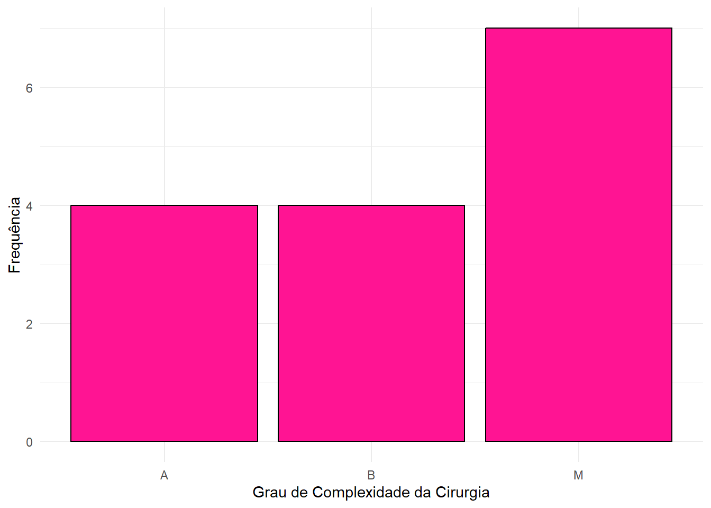
Item (c)
n_sequelas <- tab_fisio %>%
filter(Sequelas == "N")
ggplot(n_sequelas, aes(x = factor(`Fisioterapia (em meses)`))) +
geom_bar(fill = "deeppink", color = "black") +
labs(
title = "Distribuição dos Meses de Fisioterapia (Pacientes sem Sequelas)",
x = "Meses de Fisioterapia",
y = "Frequência"
) +
theme_minimal()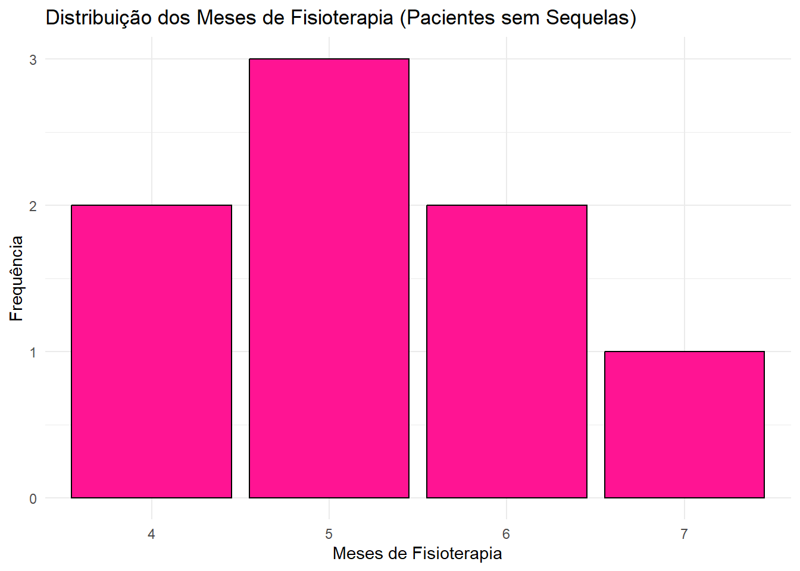
- Exercício 2:
## media dp
## 1 189.7222 60.2815## media dp
## 1 91.35714 24.42447hist(
mtcars$hp[mtcars$vs == 0],
main = "Histograma de HP (vs == 0)",
xlab = "HP",
col = "pink",
border = "white"
)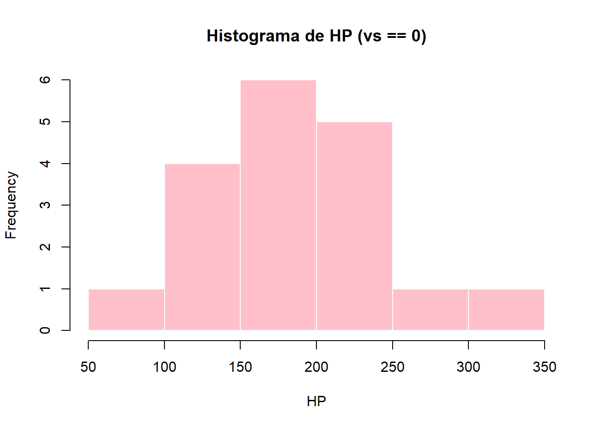
hist(
mtcars$hp[mtcars$vs == 1],
main = "Histograma de HP (vs == 1)",
xlab = "HP",
col = "pink",
border = "white"
)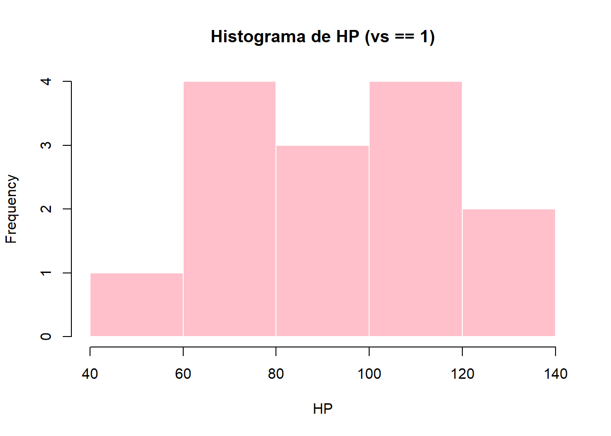
- Exercício 3
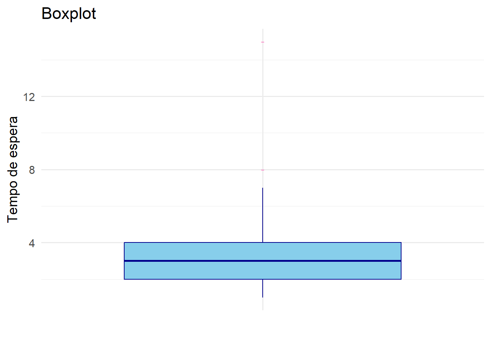
- Exercício 4
item (a)
{2, 3, 4, 7, 7}
item (b)
| x | FDE |
|---|---|
| 2 | 0.2 |
| 3 | 0.4 |
| 4 | 0.6 |
| 7 | 1.0 |
item (c)
dados <- c(3, 7, 4, 2, 7)
fde <- ecdf(dados)
plot(fde, main = "Função de Distribuição Empírica (FDE)",
xlab = "x", ylab = "F_n(x)", verticals = TRUE, do.points = TRUE, pch = 19)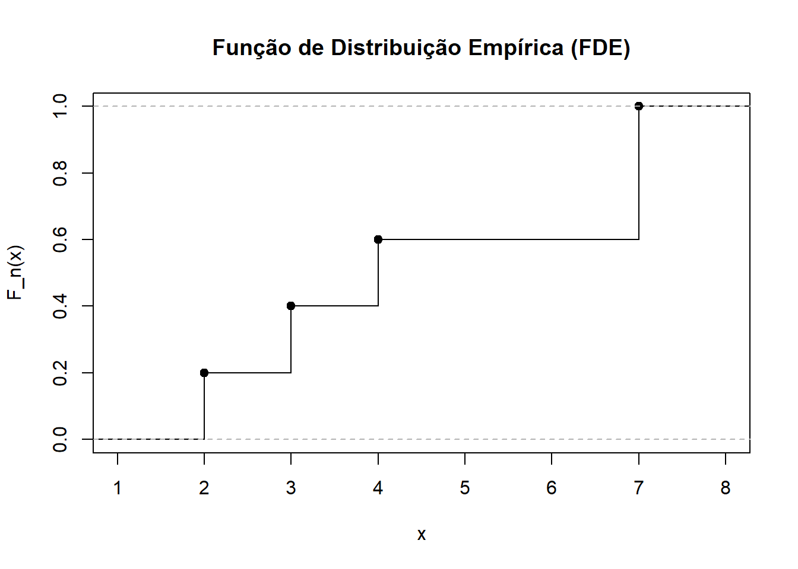
11.5 Capítulo 7
- Exercício 1
Primeiro, interpretando o exercício:
Das 200 pessoas estudadas, 100 pacientes são doentes e 100 não são doentes. No teste, dos 75 resultados positivos, 25 são falsos-positivos, ou seja, temos 50 pacientes positivados e com HIV. Já dos 125 resultados negativos, 50 são falsos-negativos, ou seja, temos 75 pacientes negativados e sem HIV.
item (a)
library(dplyr)
library(gtsummary)
# Criar os dados com data.frame()
dados_hiv <- data.frame(
Teste = c(rep("Positivo", 75), rep("Negativo", 125)),
Doenca = c(
rep("Doente", 50), # verdadeiros positivos
rep("Não Doente", 25), # falsos positivos
rep("Doente", 50), # falsos negativos
rep("Não Doente", 75) # verdadeiros negativos
))
dados_hiv %>%
tbl_cross(
row = Teste,
col = Doenca,
percent = "cell"
) %>%
bold_labels()|
Doenca
|
Total | ||
|---|---|---|---|
| Doente | Não Doente | ||
| Teste | |||
| Negativo | 50 (25%) | 75 (38%) | 125 (63%) |
| Positivo | 50 (25%) | 25 (13%) | 75 (38%) |
| Total | 100 (50%) | 100 (50%) | 200 (100%) |
item (b)
Seja: vp: verdadeiro positivo (tem HIV e teste foi positivo) fp: falso positivo (não tem HIV, mas teste deu positivo) fn: falso negativo (tem HIV, mas teste deu negativo) vn: verdadeiro negativo (não tem HIV e teste deu negativo)
Sensibilidade: a probabilidade do teste dar positivo, dado que a pessoa está doente.
\[ S = \frac{\text{vp}}{\text{vp + fn}} = \frac{50}{50 + 50} = 0,5 \]
Especificidade: a probabilidade do teste dar negativo, dado que a pessoa não está doente.
\[ E = \frac{\text{vn}}{\text{vn + fp}} = \frac{75}{75+25} = 0,75 \]
Item (c)
Valor Preditivo Positivo: a probabilidade da pessoa estar doente, dado que o teste deu positivo.
\[ VPP = \frac{\text{vp}}{\text{vp + fp}} = \frac{50}{50+25} \approx 0,67 \]
Valor Preditivo Negativo: a probabilidade da ausência de doença quando o teste deu negativo.
\[ VPN = \frac{\text{vn}}{\text{vn + fn}} = \frac{75}{75+50} = 0,6 \]
item (d)
A acúracia é a probabilidade do teste fornecer resultados corretos, ou seja, ser positivo nos doentes e negativo nos não doentes.
\[ AC = \frac{\text{vp + vn}}{\text{total}} = \frac{50 +75}{200} = 0,625 \]
11.6 Capítulo 8
- Exercício 1
library(ggplot2)
# Carregar o dataset mtcars (já está disponível no R)
data("mtcars")
ggplot(mtcars, aes(x = factor(cyl), y = mpg, fill = factor(cyl))) +
geom_boxplot() +
labs(
title = "Eficiência de Combustível (MPG) por Número de Cilindros",
x = "Número de Cilindros",
y = "Milhas por Galão (MPG)",
fill = "Cilindros"
) +
theme_minimal() 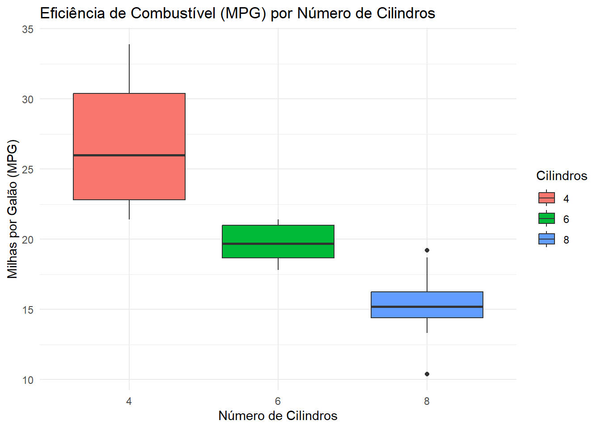
O boxplot mostra uma associação negativa entre o número de cilindros e a eficiência de combustível (MPG).
Podemos observar que para carros com 4 cilindros (4-cyl) mediana de MPG mais alta e uma dispersão relativamente grande, indicando maior eficiência. Já em carros com 6 cilindros (6-cyl) a mediana de MPG é menor do que os de 4 cilindros e com menor dispersão. Por fim, carros com 8 cilindros (8-cyl) possuem a mediana de MPG mais baixa, sugerindo que, em média, são os menos eficientes em termos de combustível.
Ou seja, o gráfico sugere que, à medida que o número de cilindros aumenta, a eficiência de combustível tende a diminuir.
- Exercício 2
# Carregar o pacote ggplot2
library(ggplot2)
# Carregar o dataset iris (já está disponível no R)
data("iris")
# Opcional, definir as cores para cada espécie, similar ao seu modelo
cores_especies <- c("setosa" = "hotpink",
"versicolor" = "darkturquoise",
"virginica" = "orchid")
ggplot(iris, aes(x = Sepal.Width, fill = Species)) +
geom_histogram(alpha = 0.8, color = "black", binwidth = 0.2) +
scale_fill_manual(values = cores_especies) +
facet_wrap(~Species, ncol = 1) +
labs(
title = "Distribuição da Largura da Sépala por Espécie de Íris",
x = "Largura da Sépala (cm)",
y = "Frequência"
) +
theme_bw() +
theme(legend.position = "none") 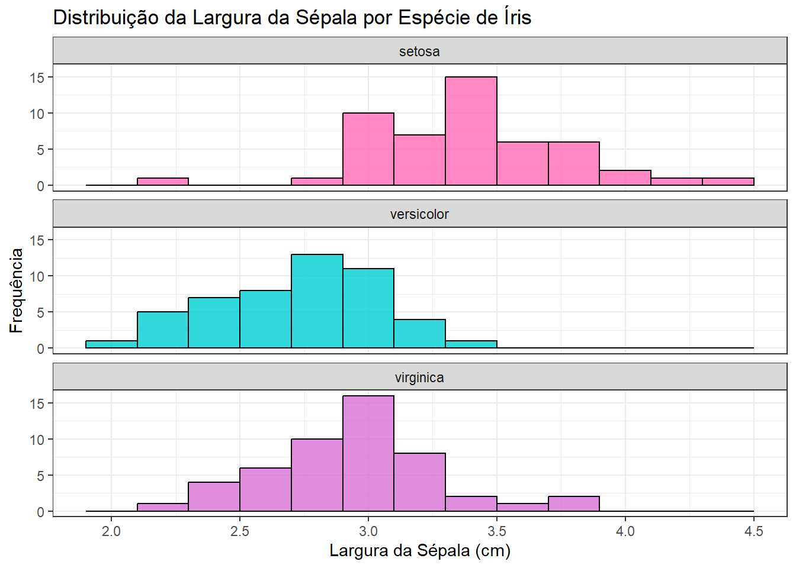
11.7 Capítulo 9
- Exercício 1
item (a)
Simular os lançamentos de um dado honesto:
item (b)
Calcular a média acumulada depois de cada lançamento:
somas <- cumsum(lancamentos)
# Divide cada soma pelo número de lançamentos até aquele ponto
medias <- somas / (1:n)item (c)
plot(medias, type = "l",
main = "Convergência da Média dos Lançamentos de um Dado",
xlab = "Número de Lançamentos",
ylab = "Média Acumulada",
col = "black")
# Adicionar linha horizontal com o valor esperado (3,5)
abline(h = 3.5, col = "deeppink", lty = 2, lwd = 2)
# Legenda
legend("topright", legend = c("Média acumulada", "Valor esperado (3,5)"),
col = c("black", "deeppink"), lty = c(1, 2), bty = "n")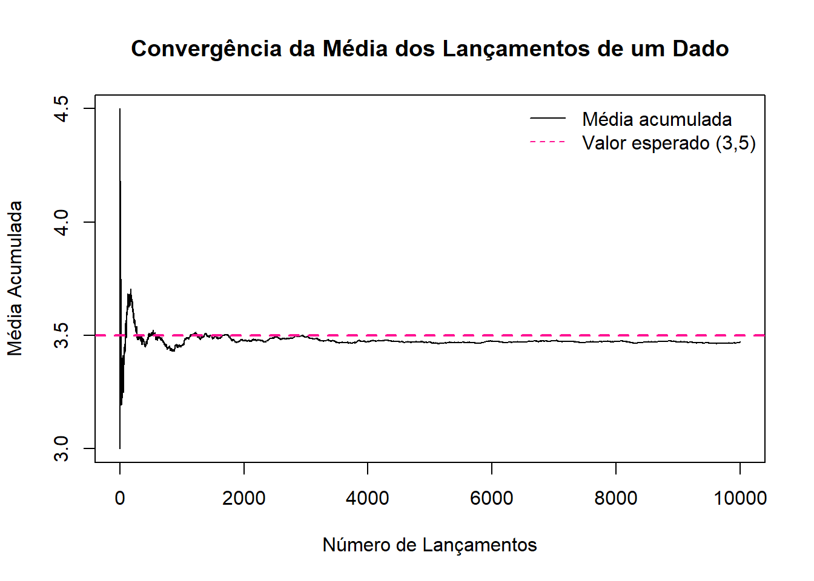
- Exercício 2
item (a)
set.seed(123)
n_simulacoes <- 10000
n_questoes <- 10
# A probabilidade de acerto ao chutar uma questão é 1 em 4 (0,25)
p_acerto <- 1 / 4
acertos <- rbinom(n_simulacoes, size = n_questoes, prob = p_acerto)item (b)
sucessos <- sum(acertos >= 4)
prob_estimada <- sucessos / n_simulacoes
cat("Estimativa de P(acertar pelo menos 4 questões):", prob_estimada, "\n")## Estimativa de P(acertar pelo menos 4 questões): 0.2183item (c)
- Exercício 3
item (a)
set.seed(123)
n_simulacoes <- 10000
dado1 <- sample(1:6, size = n_simulacoes, replace = TRUE)
dado2 <- sample(1:6, size = n_simulacoes, replace = TRUE)item (b)
somas <- dado1 + dado2
# Verificar se soma > 8 OU soma == 5
condicao_satisfeita <- (somas > 8) | (somas == 5)
# Contar quantas vezes a condição foi satisfeita
numero_condicao_satisfeita <- sum(condicao_satisfeita)
cat("Número de vezes que a condição foi satisfeita:", numero_condicao_satisfeita, "\n")## Número de vezes que a condição foi satisfeita: 3812item (c)
# Estimar a Probabilidade
probabilidade_estimada <- numero_condicao_satisfeita / n_simulacoes
cat("Probabilidade estimada:", probabilidade_estimada, "\n")## Probabilidade estimada: 0.3812